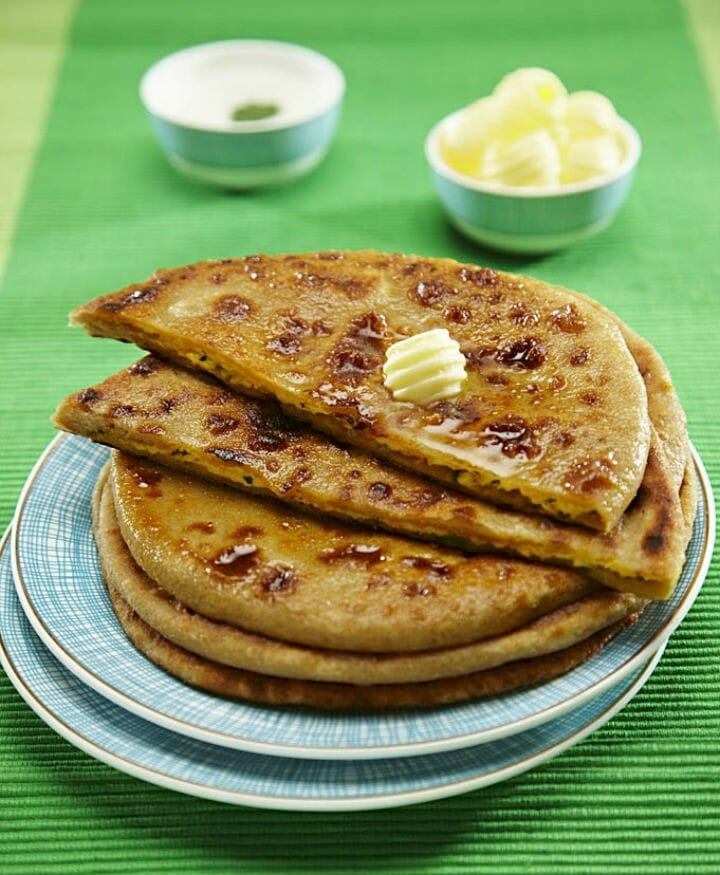

Back
Aloopratha

Aloo paratha is one of the most popular breakfast foods in northern India, a flatbread stuffed with a spicy potato mixture. Its name is derived from aloo, denoting a potato, parat, denoting layers, and atta, denoting flour.
The flatbread is made from wholemeal flour, salt, and ghee, forming flaky, soft, and crispy layers that are golden-brown in color. The filling consists of mashed potatoes, ginger, green chilies, coriander, dried pomegranate seeds, chili powder, and salt.
The dish is often topped with Indian homemade butter called makhan and it is traditionally served with chutneys, pickles, onions, and yogurt or tea on the side. Due to its popularity, it spread from Punjab to various parts of the Indian subcontinent, but also to Malaysia, Mauritius, Singapore and the Caribbean.
Ingredients
- 4 boiled potatoes, peeled and mashed.
- Salt to taste
- Zeera powder
- Red chilli powder to taste
- 1 onion very finely diced (optional)
- 2 cups (470 ml) maida or wheat flour
- 1 tablespoon (15 ml) oil (vegetable preferred)
- Adequate water
- 4 tablespoons (59 ml) butter
Steps
- Knead the dough with 1⁄2 tablespoon (7.4 ml) oil and sufficient amount of water. The dough should be a little tougher than your average pizza dough.
- Keep the dough aside for 1/2 an hour.
- To your boiled and mashed potatoes, add all the dry spices, the finely chopped onions and salt. Mash it so that there are no lumps. Ensure that your potato mash is not watery.
- On your kitchen board, sprinkle a little dry flour. Make balls of the dough you had kneaded.
- Roll one ball at a time into a thick small circle
- Now lift the circle in your left hand, and place the potato mash in the centre.
- Fold the edges in wards like you do in a dumpling, ensuring that no filling is exposed.
- Roll this dumpling so that it becomes a proper round again.
- Sprinkle some dry flour on the ball and the board. Place the ball, down, and with your rolling pin, gently press to make a plus sign. This will help ensure that the stuffing is spread evenly all through.
- Very gently roll the ball in to a flat not to thin circle. Keep in mind that the stuffing should not come out.
-
Heat a skillet to medium temperature. Grease it with butter, then cook both the sides of the paratha, by flipping it over, so that the sides brown properly.
-
Your paratha is ready to eat. Serve it with pickle (Indian), yogurt, or just a dab of butter! Excellent to beat the cold.